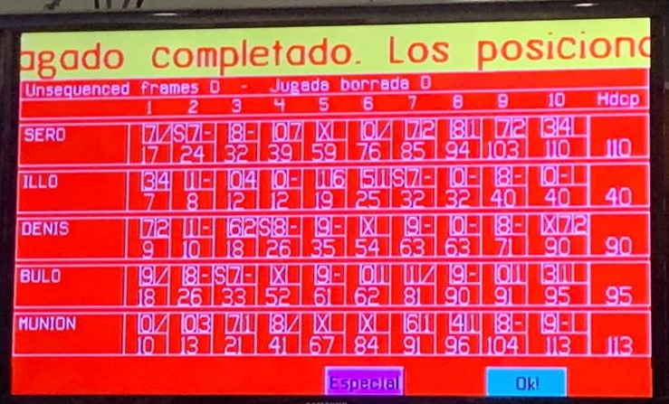

Todas las reflexiones, incluyendo alguna que aún no he añadido a la web: https://docs.google.com/document/d/16Mb2BnNSyh81VnNCyEs9rd4kocsi81qK3CufvFhcgqA/edit?usp=sharing
01/10:
Este miércoles me he quedado en el colegio para realizar una actividad con Álvaro Cameo y Jaime Acosa. Inicialmente Álvaro Cameo me propuso este proyecto, y dije que sí. El proyecto consiste en crear una página web que contenga el contenido de matemáticas de 3º y 4º de la ESO de matemáticas y así ayudar a alumnos a los que les cuesta más comprender el temario.
Álvaro empezó el proyecto redactando los primeros puntos del temario, y yo soy el encargado de complementarlo creando actividades, ejercicios, para repasar el contenido. Para hacerlo nos basamos en un libro antiguo que tenemos de los cursos pasados.

Después de un tiempo, Jaime Acosa se unió al proyecto, ya que 2 cursos dos personas nos pareció mucho. Entonces, finalmente, el miércoles pasado nos reunimos en el colegio durante las horas que nos podíamos ir a casa y empezamos la página web.
02/11:
Este trimestre hemos decidido continuar con el club de matemáticas el cual dirigimos Álvaro Cameo y yo. Este engloba todas las actividades como ejercicios en conjunto, ayudar a otras personas o apuntarnos a concursos de matemáticas online.
Nos hemos quedado varios miércoles, viernes y días en casa para trabajar y meterle horas a este. Principalmente el tiempo que dedicamos es en casa, para practicar, pero también buscamos concursos o hacemos las actividades de unos pasados para practicar. No nos hemos llegado a apuntar por la falta de tiempo. También hemos dedicado un poco de tiempo a la página web del temario de matemáticas.
Finalmente creo que es una buena actividad de CAS ya que trabajamos en equipo al mismo nivel para resolver problemas de gran dificultad.
02/11:
Durante este trimestre sigo con mi actividad deportiva principal: ir al gimnasio. Como otros trimestres, sigo yendo bastante a menudo, más o menos 4 horas a la semana. Habría reducido el número de horas que voy si no fuese porque ahora tengo una bici buena para ir al gimnasio, así que todos los días que voy tardo mucho menos en ir y en volver. El único inconveniente fue que al principio no aguantaba casi tiempo en bici y llegaba ya cansado al gimnasio, lo cual no es óptimo.
La motivación este trimestre ha sido más bien poca, con todos los trabajos internos y exámenes he ido menos. Pero este trimestre se han apuntado varios amigos y por tanto he ido algunas veces que no tenía planeado ir.
Mi objetivo personal era mantener mi progreso esta evaluación y mejorar un poco en general, pero como he tenido poco tiempo he trabajado menos el entrenamiento dirigido a fuerza, el cual lleva más tiempo. Pero como todos los trimestres, también voy haciendo retoques a mis rutinas y paso de enfoque entre grupos musculares, ha ido cambiando la importancia que le daba a cada uno y el tiempo que les dedicaba en el gimnasio.
Finalmente, además de ir al gimnasio como se han apuntado esos amigos que he mencionado antes, he hecho varias rutinas y los he ayudado para que supiesen cómo empezar.
13/11:
Por mi cumpleaños en verano pedí una bici, y desde que la tengo la he aprovechado bastante. La he usado un par de veces para hacer rutas largas, pero sobre todo la utilizo todos los días que voy al gimnasio.
A finales de verano decidí ir a casa de un amigo que me había invitado en bici, entonces salí de mi casa pensando que iban a ser 45 minutos duros pero que iba a poder. Entonces a mitad de camino ya estaba demacrado, casi no me quedaba agua y habían pasado ya 40 minutos y veía que me quedaba mucho. Seguí y después de otros 40 minutos muy duros, ya que era casi todo cuesta arriba en verano, conseguí por fin llegar, ese ha sido uno de mis mayores retos este verano. También he hecho rutas de 40 minutos por el descampado entre Majadahonda y las Rozas, ya que es campo abierto, no hay coches y es muy entretenido ir por un recorrido con terreno difícil. La verdad es que no me he sacado muchas fotos a la hora de montar en bici, pero he encontrado una ya al final de un recorrido en el que salgo muerto de cansancio.
Ya que tengo una bici he decidido perder menos tiempo al ir al gimnasio e ir y volver en bici. Antes tardaba 25 minutos en ir y otros 25 en volver, ahora salgo cuando quiero (el autobús no siempre es perfecto) y tardo 13 minutos de ida y 7 de vuelta, la ida es todo cuesta arriba y la vuelta todo cuesta abajo, pero vuelvo cansado. Gracias a esto puedo ir más al gimnasio, sino con todo el trabajo que tengo que hacer no iría casi.
En resumen, cada vez me cuesta menos aguantar distancias largas cuesta arriba y además me gusta mucho, mucho mejor que ir en autobús. El único inconveniente es que llego ya un poco cansado al gimnasio, pero cada vez menos.
13/11:
Este trimestre he vuelto a jugar al tenis. Esta vez para hacer una actividad el cumple de Víctor. Nos juntamos Víctor, Asier, Alejandro André, Alejandro García, Alonso Granado, Jorge Izaguirre, Juan Álvarez y yo.
Primero jugamos un calentamiento por parejas para luego jugar partidos. Echamos a suertes los equipos y decidimos dividirnos en dos pistas, cada equipo tenía alguien que sabía jugar al tenis y otra persona que no. Si ganabas el partido, el mejor de 3 sets, pasabas a la pista 1, si ya estabas en la 1 mantenías tu puesto, y si perdías bajabas a la pista 2.
Acabé perdiendo como 3 partidos y ganando 2, pero estoy satisfecho con como jugué, sigo manteniendo mi nivel.
13/11:
A mis amigos les gusta mucho el fútbol, y como ya no jugamos nunca, decidimos jugar en la pista de al lado de mi casa, hicimos lo mismo que la última vez, nos echamos un rápido y luego jugamos un partido.
De alguna forma jugué muy bien, generalmente no soy bueno, pero tuve muy buena precisión. También metí un par de goles en el partido y como voy mejorando, cada vez me gusta más.
Al final terminamos colando la bola y no pudimos recuperarla, pero fue divertido.
15/10:
lunes pasado dedicamos un par de horas para ayudar a la gente encargada del proyecto del cáncer de mama. Durante este tiempo recortamos las cartulinas con la forma adecuada para encajar en todas las caras de las urnas de donaciones, así no se vería todo el dinero dentro, y quedaría mucho mejor, sobre todo con el color rosa, color característico del día. Hicimos unas 6 caras repitiendo el ejemplo que nos dieron. También ayudamos con las pulseras, introduciendo las bolitas en los hilos. Finalmente, no considero esta actividad como principal, ya que no soy el encargado de organizarlo, pero sí que está bien ayudar a la causa, ya que cuantos más mejor.
15/10:
En verano Víctor y yo empezamos a planear una actividad de CAS, Víctor había comprado una serie de plantas para experimentar en SAS, y cuando terminase, las que se habían regado con agua limpia las íbamos a plantar.
Ya en septiembre Víctor terminó de recopilar datos. Decidimos que después del colegio íbamos a parar en su casa, cogimos una pala, un pico, una regadera y las plantas. Fuimos al sitio que habíamos planeado anteriormente, el descampado de su casa. Buscamos durante 10 minutos cargando con todo hasta que encontramos el sitio adecuado para plantar el árbol grande. Cavamos un agujero del tamaño de la maceta, separamos la maceta de la planta y luego la metimos en el agujero, recogimos la tierra sacada y la pusimos para estabilizar la planta, finalmente la regamos.
El mayor problema fue cavar los agujeros ya que había rocas. Al cabo de varios intentos descubrimos que lo mejor era romper las piedras con el pico y luego sacar la tierra con la pala.
Al final plantamos el árbol grande y 7 pequeñitos que teníamos.

24/07:
Desde que acabó la tercera evaluación en mayo, yo me uní a un proyecto que dirigían Álvaro Cameo y Jaime Acosa para hacerlo con ellos. El proyecto era montar un go-kart que funcionaba con energía producida por una oxidación que hacían bacterias y plantas. Ahora mismo diría que todos hacemos lo mismo y estamos al mismo nivel de cargo en el proyecto, aunque Jaime es el más motivado.
Nos quedamos 3 miércoles por la tarde para estar en el laboratorio y crear esta “batería”. El primer día fue de organización y de pedir ayuda a Elena, ya que es todo química y nos queríamos apoyar en un trabajo que hizo una alumna pasada del colegio. El primer día apuntamos todo lo necesario para montarlo. El siguiente día fuimos al campo a por una planta, la metimos en una botella de agua que cortamos y pusimos dentro tierra con nutrientes y agua. Montamos parte del sistema de botellas y cámaras y dejamos la planta cerca de la ventana para que le diera el sol.
Finalmente, probamos el sistema pero no dio voltaje por tanto pensamos que habíamos fracasado, pero era porque no supimos utilizar el voltímetro. Pero cuando volvimos dos semanas después, la planta estaba prácticamente muerta, nuestras teorías son que o el verano no lo soportan bien (porque las otras del campo también estaban muy mal) o que unos pulgones mataron a la planta, ya que estaba llena de estos. Decidimos atrasar esta parte del proyecto, y hacerlo bien en septiembre, comprando maceta y planta. Si vuelve a fallar siempre se puede comprar una batería.
Entonces decidimos que para empezar había que montar parte del chasis del kart, empezamos comprando en el Leroy Merlín tubos de PVC de 2 metros y varios conectores para unir estos tubos. Fuimos a casa de Jaime (estamos construyendo el kart en su garaje) y montamos el chasis serrando tubos y uniéndolos.
El día siguiente fue uno largo, primero fuimos al punto limpio de Majadahonda donde preguntamos si tenían ruedas usadas de carretilla, pero no encontramos nada, vimos un par de vídeos de como montar un sistema de viraje para un kart, pero era todo muy caro, y el objetivo del kart era hacerlo todo nosotros al menor coste posible, la estética y potencia no era el objetivo. Y como ese día no teníamos nada más que hacer, fuimos al Leroy Merlin para comparar tubos y precios, y también para ver si había ruedas y tubos que conectasen bien. No compramos nada, pero fue útil el tiempo invertido.
El 9 de julio fuimos a casa de Jaime, ahí editamos el chasis inicial, y pensamos cómo crear un sistema de viraje barato. Después de muchas ideas, creamos un sistema muy simple con tubos de PVC más finos para crear un volante, pero acabó siendo uno más bien parecido al de la bici, movimiento para delante y atrás, no rota sobre un eje una rueda. Fuimos al Leroy Merlin de Majadahonda otra vez y compramos tubos, enganches y ruedas para el kart. Volvimos a casa de Jaime para montar lo comprado, y después sorprendentemente funcionó. Como vimos que funcionaba, después de unos retoques, decidimos pegar con un pegamento especial para tubos de PVC los enganches que no se iban a modificar. Estábamos a punto de conseguir que las ruedas de delante giraran y que el kart se pudiera mover para delante si levantábamos la parte de atrás pero hubo un problema, había demasiada flexión en el tubo que unía las ruedas delanteras. Para arreglar esto apuntamos que para el próximo día íbamos a necesitar unos enganches que meteríamos al cortar el tubo en varias partes, cuantos más trozos de menor longitud, menos se dobla.
29/07:
Ayer probablemente fue el último día que vamos a poder montar el kart hasta septiembre, porque no volvemos a coincidir los 3 en todo el verano. Ayer lo que hicimos fue dedicarnos a la parte de atrás del kart. Primero fuimos a comprar lo que necesitabamos otra vez en el Leroy Merlín y volvimos a casa de Jaime para construirlo. Terminamos lo del día anterior que quedaba pendiente (utilizar enganches para evitar la flexión), pero no funcionó, no era suficiente, así que vamos a comprar un barra fina de metal para meterla dentro del tubo. Después montamos las ruedas de atrás, sin ponerle motor ni tracción aún, y ruedan perfectamente. Pero nos encontramos con un problema grande, las ruedas de delante rozaban demasiado al girar, así que hicimos dos ranuras en dos tubos de esta forma:
Tardamos muchísimo ya que no tenemos las mejores herramientas (usamos taladros, sierra no mecánica y lija). Pero lo conseguimos. Ahora nos falta el motor, los frenos, la base del kart (colocar y unir varias planchas de madera que tenemos) y comprar esa barra de metal.
Después de todo me alegro mucho de formar parte de este proyecto, aunque no funcione al final es una muy buena experiencia. Quiero estudiar ingeniería y esto es un buen primer paso. Hay también momentos no tan entretenidos, no se aprecia el tiempo de viajes en autobús de un lugar a otro, al final son muchas horas. Dedicamos la mayoría del tiempo en planear todo y al final poco en construir, pero merece la pena. Finalmente para mí, lo mejor es cuando estamos buscando soluciones a un problema que nos encontramos, por ejemplo, el primer problema fue el volante, y como evitar rozamiento entre tubos que frene la rueda, lo conseguimos al final y fue muy satisfactorio, otros problemas aun no los hemos resuelto, y otros al final son una pérdida de tiempo, intentamos fabricar una pieza serrando tubos para evitar esa flexión del tubo de las ruedas delanteras y no conseguimos nada. Pero al final aunque no funcione es todo muy divertido, sobre todo porque es en equipo, y todos trabajamos y pensamos ideas por igual.
29/11:
El viernes pasado retomamos el kart después de ir retrasando continuamente por el trabajo del colegio. Pero solo pudimos hacerlo Jaime y yo, ya que Álvaro Cameo estaba ocupado.
Llevábamos bastante tiempo ya planeando que íbamos a hacer, durante las horas de CAS, así que fuimos directos. Primero arreglamos el chasis del kart, los tubos de PVC, cambiamos las longitudes de los tubos principalmente. Después utilizamos las tablas de madera que teníamos de antes, las cortamos con una sierra de calar para conseguir una base para el kart. Claro, todo esto tenía que ser muy preciso, y utilizamos rotuladores para marcar, regla, sierra y más herramientas. Esto llevó como 1h y media.
Seguimos con el sistema de viraje que no había funcionado la última vez. Creamos piezas para conectar con tubos que íbamos a reutilizar, quedó así:
También para conseguir estos círculos y cortes tardamos bastante tiempo. Luego fuimos a una ferretería para conseguir pernos, tuercas y escuadras que servirían ya para unirlo todo. Finalmente conseguimos las piezas, comprobamos que enganchaban y ya lo dejamos por ese día. Ya tenemos todo en mente, solo tenemos que dedicar más tiempo en esta época tan ocupada. Creo que actualmente llevamos como un tercio hecho, y por ahora es así:
5/12:
Esta vez nos centramos en arreglar el sistema de viraje. Primero pensamos todos juntos la manera de transmitir un movimiento diagonal de rotación (movimiento del volante inclinado) a uno que fuese lateral, ya que lateral significa mover las ruedas izquierda y derecha.
Conseguimos fabricar una pieza con madera con la que enganchar el volante y a partir de ahí enganchamos dos piezas de madera alargadas para llegar del centro (enganche del volante) a las ruedas. Esto junto a más piezas hizo posible la rotación. Ese día celebramos un éxito.
30/01:
No hemos podido trabajar en el kart el último mes (15 de diciembre a 15 de enero). Por tanto estos 3 últimos días han sido de trabajo duro. Hemos cortado planchas de madera y las hemos puesto como base del kart. Esto suena muy sencillo pero tuvimos que tener en cuenta la longitud, del kart, el ancho, si queríamos que ocupase todo el kart para dar más estabilidad, el espacio extra que había que dejar para fijarla bien, etc. También hemos tenido que volver a pegar todos los tubos ya que después de un tiempo y tanto rotarlos hemos despegado algunos.
El primer día lo dedicamos a fijar la silla a esta plancha de madera. Hubo varios fallos, pero conseguimos ajustar la silla para ponerla exactamente donde queríamos para dejar espacio para estirar las piernas y para poner el motor al final del kart, ya que no sabemos cuánto ocupa.
Por otra parte, nos hemos dado cuenta de que el éxito que celebramos el día del sistema de viraje no ha sido un éxito. Las ruedas delanteras no soportan tanto peso y se hunden hacia dentro. Álvaro Cameo propone empezar de nuevo pero Jaime y yo pensamos que puede funcionar con unos pocos arreglos, pero lo dejamos ya para el próximo día. Sin embargo, sí que mejoramos el kart ya que añadimos la vara de metal para el eje trasero, la cual aguanta nuestro peso bastante bien y claramente es necesaria.
Además hemos encontrado un problema muy grave, aunque ya podemos sentarnos encima, la verdad es que el kart no aguanta nuestro peso como se puede ver aquí:
Hemos debatido si poner un tercer eje en el medio ya que después de intentarlo múltiples veces y pedir ayuda no conseguimos arreglar el problema. El peso no puede ir delante pero tampoco puede ir muy atrás, pero centrado se dobla el kart. Así que el próximo paso es comprar una vara de metal para el eje central del kart y así ver si soporta nuestro peso.
2/11:
Durante este trimestre sigo con mi actividad deportiva principal: ir al gimnasio. Como otros trimestres, sigo yendo bastante a menudo, más o menos 4 horas a la semana. Habría reducido el número de horas que voy si no fuese porque ahora tengo una bici buena para ir al gimnasio, así que todos los días que voy tardo mucho menos en ir y en volver. El único inconveniente fue que al principio no aguantaba casi tiempo en bici y llegaba ya cansado al gimnasio, lo cual no es óptimo.
La motivación este trimestre ha sido más bien poca, con todos los trabajos internos y exámenes he ido menos. Pero este trimestre se han apuntado varios amigos y por tanto he ido algunas veces que no tenía planeado ir.
Mi objetivo personal era mantener mi progreso esta evaluación y mejorar un poco en general, pero como he tenido poco tiempo he trabajado menos el entrenamiento dirigido a fuerza, el cual lleva más tiempo. Pero como todos los trimestres, también voy haciendo retoques a mis rutinas y paso de enfoque entre grupos musculares, ha ido cambiando la importancia que le daba a cada uno y el tiempo que les dedicaba en el gimnasio.
Finalmente, además de ir al gimnasio como se han apuntado esos amigos que he mencionado antes, he hecho varias rutinas y los he ayudado para que supiesen cómo empezar.
15/01:
Este viernes pasado salimos mis amigos y yo a jugar a los bolos. Estos últimos 2 años he jugado a los bolos solo unas 4 veces, aún así cada vez mejoro, pero me cuesta arrancar. Poco a poco voy mejorando la técnica, tiro la bola de bolos más centrada y cada vez con menos rotación lateral para que no se desvíe. En la siguiente foto se me ve tirando todos los bolos excepto uno:
Claramente todos lo estábamos viviendo y pasándolo bien. En la primera partida quedé segundo. Sin embargo, remonté la segunda partida con una racha de semi-pleno, pleno y pleno, pasando en 3 rondas de 41 a 91 puntos y acabar ganando con 113:

20/01: Este trimestre he vuelto a retomar la actividad de impartir clases particulares a alumnos que las necesiten. Hay una alumna del colegio que se estaba replanteando cambiarse al bachillerato internacional, y después de hablar conmigo y unos cuantos alumnos más ha decidido dar el salto.
Como ha llegado un trimestre más tarde que sus compañeros yo me ofrecí a ayudarla para compensar todo lo perdido, por tanto a diferencia del año pasado esta vez no solo explico asignaturas como matemáticas o física sino que ayudo con todo, desde literatura hasta el trabajo interno de TOK.
La verdad es que las clases son entretenidas aunque cortas. Recordar todo lo que hice y en la situación en la que estaba yo me da muchas ideas para ayudar como pueda. Las clases han pasado de ser más generales a específicas. Al principio expliqué todo acerca del IB, cada asignatura y cómo afrontarlo todo. Al final del trimestre me he centrado en cosas específicas como el trabajo interno de física o como comentar un texto. La verdad es que la experiencia me ha gustado mucho y me ha hecho sentirme bien aprovechando todo mi conocimiento para ayudar a alguien que lo aprecie.
03/04:
A día de hoy sigo trabajando con la página web ya que hay ciertos apartados que no me gustan y sigo haciendo actividades así que voy actualizándola regularmente, pero en esta reflexión voy a intentar resumir todo lo que he hecho.
Al llevar un año ya con la página web tuve que renovar ciertos permisos y aspectos de la web. Por ejemplo, actualmente estoy recuperando el permiso de https que significa que se ha analizado mi página y se comprueba que es segura para cualquier usuario. Sin embargo, este proceso lleva un tiempo y sigo esperando.
He comenzado ya a diseñar la página web para el segundo año de CAS. Inicialmente probé muchos colores, paletas y estilos, pero ninguno me convenció, así que he decidido centrarme en la estructura por ahora y ya más tarde ajustar la parte visual de la web: los márgenes y colores.
Actualmente también estoy corrigiendo ciertos aspectos de la página para el primer año de CAS ya que no me convencían los hipervínculos y yo quería que tuviese una animación suave a la hora de desplazar al usuario al apartado correspondiente.
Finalmente, me estoy empezando a dar cuenta de todas las posibilidades que tiene diseñar toda tu página web, hay tantos estilos, tantos colores que no llego a decidirme. Por otra parte, hay mucho trabajo monótono a la hora de programar y por tanto lo he abandonado un tiempo, pero últimamente estoy actualizándola regularmente.
01/04:
Estos días hemos decorado el póster de CAS. Al principio yo quería hacer uno simple, pero ordenado y limpio. Sin embargo, el segundo día de trabajo vi las cosas sorprendentes que habían hecho algunas personas y decidí hacer algo original. Pensé en hacer algo creativo y me di cuenta de que el origami era una muy buena opción.
Así que decidí buscar un origami para hacer. A varias personas les gustó mi idea y decidieron también hacer un origami. Yo decidí hacer una especie de rueda con pinchos que me pareció muy chula. Al principio iba genial hasta que me di cuenta de que tenía que hacer todo lo que había hecho otras 7 veces más y luego unirlo todo. Pero decidí continuar con mi proyecto y no cambiar a uno más sencillo. Después de 1 hora conseguí las 8 piezas y las fui uniendo. El resultado final me encantó, ya que no solo era bonita, además se podía abrir y cerrar: se podían meter los pinchos hacia dentro y fuera.

Además de la rueda de pinchos también recordé como de pequeño hacia figuras repetidas con un solo papel doblándolo varias veces y cortando solo un doblez con tijeras. Después de varios intentos logré obtener lo siguiente: personas dadas de la mano para representar el apartado de servicio.
3/04:
Este trimestre he vuelto motivado y con ganas de cumplir una rutina para llegar a mi objetivo de ir 4 veces por semana mínimo. Esto está siendo difícil pero estoy pudiendo cumplirlo, al menos hasta que lleguen los exámenes.
Mi objetivo personal en esta evaluación es seguir mejorando en todos los aspectos, pero especialmente en aquellos donde más he pérdido por ir poco a menudo durante la segunda evaluación. El entrenamiento ya no solo va dirigido a fuerza, pero es una parte esencial ahora. Como todos los trimestres, también voy haciendo retoques a mis rutinas como por ejemplo el orden en el que trabajo distintos grupos musculares, esta evaluación me he dado cuenta de que para mi es mejor hacer hombro después de triceps y no antes ya que me debilita mucho. El resto del trimestre planeo seguir yendo regularmente y un poco más de tiempo por sesión ya que en cuanto lleguen los exámenes de mayo tendré que parar de ir tan a menudo.
20/01: Este trimestre he vuelto a retomar la actividad de impartir clases particulares a alumnos que las necesiten. Hay una alumna del colegio que se estaba replanteando cambiarse al bachillerato internacional, y después de hablar conmigo y unos cuantos alumnos más ha decidido dar el salto.
Como ha llegado un trimestre más tarde que sus compañeros yo me ofrecí a ayudarla para compensar todo lo perdido, por tanto a diferencia del año pasado esta vez no solo explico asignaturas como matemáticas o física sino que ayudo con todo, desde literatura hasta el trabajo interno de TOK.
La verdad es que las clases son entretenidas aunque cortas. Recordar todo lo que hice y en la situación en la que estaba yo me da muchas ideas para ayudar como pueda. Las clases han pasado de ser más generales a específicas. Al principio expliqué todo acerca del IB, cada asignatura y cómo afrontarlo todo. Al final del trimestre me he centrado en cosas específicas como el trabajo interno de física o como comentar un texto. La verdad es que la experiencia me ha gustado mucho y me ha hecho sentirme bien aprovechando todo mi conocimiento para ayudar a alguien que lo aprecie.